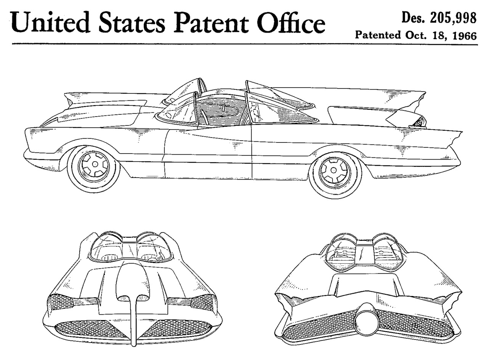
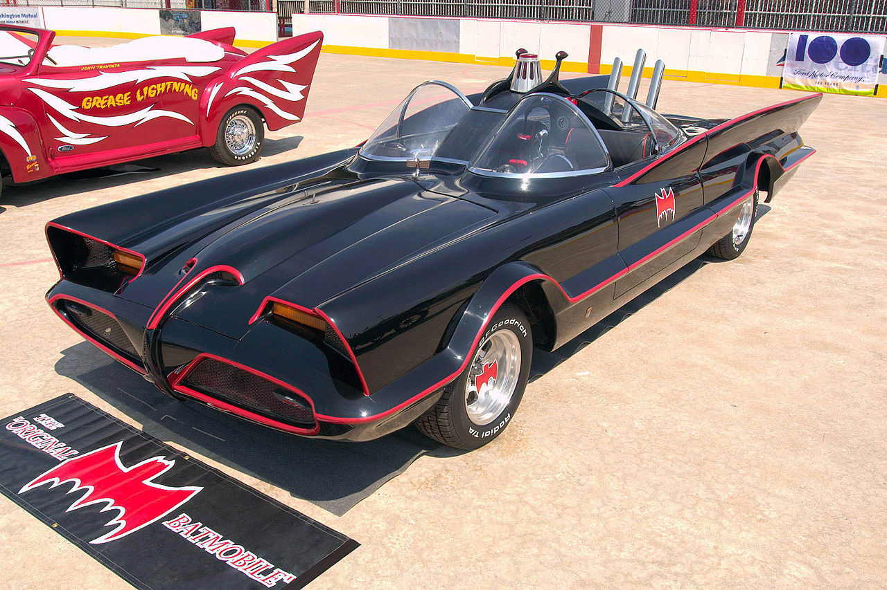

History of the 60s Batmobile
In late 1965 20th Century Fox Television and William Dozier's Greenway Productions contracted renowned Hollywood car customizer Dean Jeffries to design and build a "Batmobile" for their upcoming Batman TV series. He started customizing a 1959 Cadillac, but when the studio wanted the program on the air in January 1966, and therefore filming sooner than he could provide the car, Jeffries was paid off, and the project went to George Barris.
What became the iconic Batmobile used in the 1966–1968 live action television show and its film adaptation was a customized vehicle that originated as a one-off 1955 Lincoln Futura concept car, created by Ford Motor Company lead stylists Bill Schmidt, Doug Poole Sr., and John Najjar and their design team at the Lincoln Styling Department.
In 1954, the Futura prototype was built entirely by hand by the Ghia Body Works in Turin, Italy, at a reported cost of US$250,000—the equivalent of approximately US$2 million in 2009. It made its debut in pearlescent Frost-Blue white paint on January 8, 1955 at the Chicago Auto Show. In 1959, sporting a fresh red paint job, the Futura was featured in the film It Started with a Kiss, starring Debbie Reynolds and Glenn Ford.

Barris was trying to get Hollywood's attention with the Futura, which he had purchased from Ford for the nominal sum of $1.00 and "other valuable consideration", but aside from its film appearance, the Futura had been languishing in his Hollywood shop for several years. With only three weeks to finish the Batmobile (although in recent years Jeffries says that his car was dropped because he was told it was needed in "a week and a half", he was quoted in 1988 as saying "three weeks" as well), Barris decided that, rather than building a car from scratch, it would be relatively easy to transform the distinctive Futura into the famous crime-fighting vehicle. Design work was conducted by Herb Grasse, working as an associate designer for Barris.
Design and construction
Barris hired Bill Cushenberry to do the metal modifications to the car and its conversion into the Batmobile was completed in just three weeks, at a reported cost of US$30,000. They used the primer-painted, white-striped car in October 1965, for a network presentation reel. Shortly afterward, the car was painted gloss black with "fluorescent cerise" stripes. Barris retained ownership of the car, estimated to be worth $125,000 in 1966 dollars, leasing it to 20th Century Fox and Greenway Productions for use in the series.

Exhibition
Barris built two fiberglass copies of the original Batmobile for exhibition on the car show circuit and a third for exhibition drag racing. Eventually, the three copies (and the screen-used metal Futura Batmobile) were covered with a black velvet "fuzz" paint, presumably to hide stress cracks in the fiberglass bodies. Later, all three were restored to their gloss black paint job. The three replicas are all based on a 1965–1966 Ford Galaxie.
The #1 Barris-built Batmobile sold at Barrett-Jackson Auctions on January 19, 2013 for 4,620,000 USD. The three Barris copies all reside in private collections, including the exhibition drag racing version driven by wheelstanding driver Wild Bill Shrewsberry. This car was built with a dual-quad Holman Moody Ford 427 V8 engine, Art Carr-prepared Ford C6 automatic transmission and 5.14 gears in the rear end. Quarter-mile times were in the mid-12 second range, primarily because Shrewsberry would launch the car in second gear and smoke the overinflated rear tires for show down most of the strip. The "rocket exhaust" was made functional via a tank filled with either gasoline or kerosene which was pumped out the exhaust port and ignited electrically.